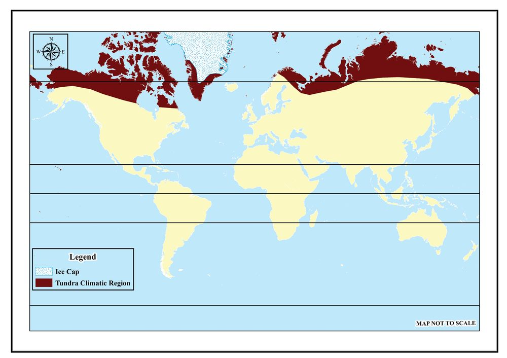
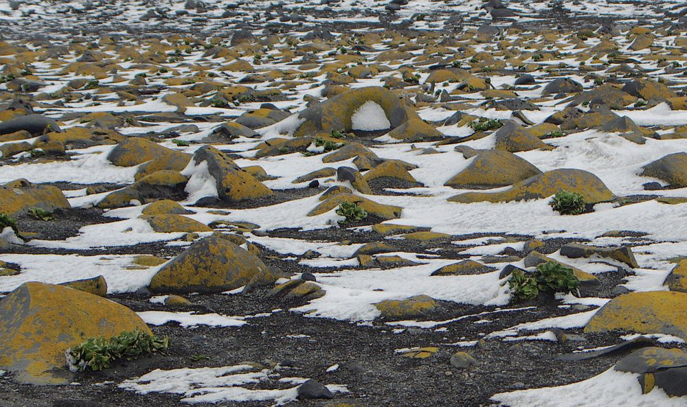
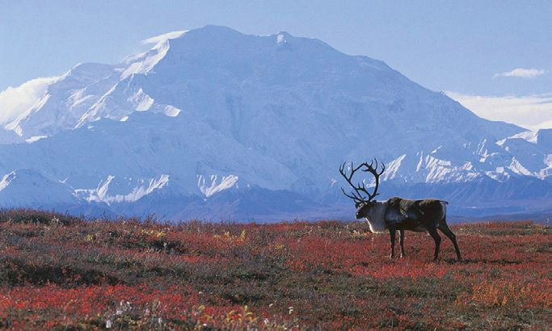
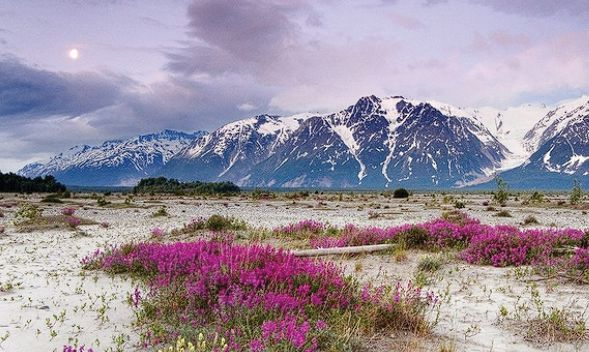
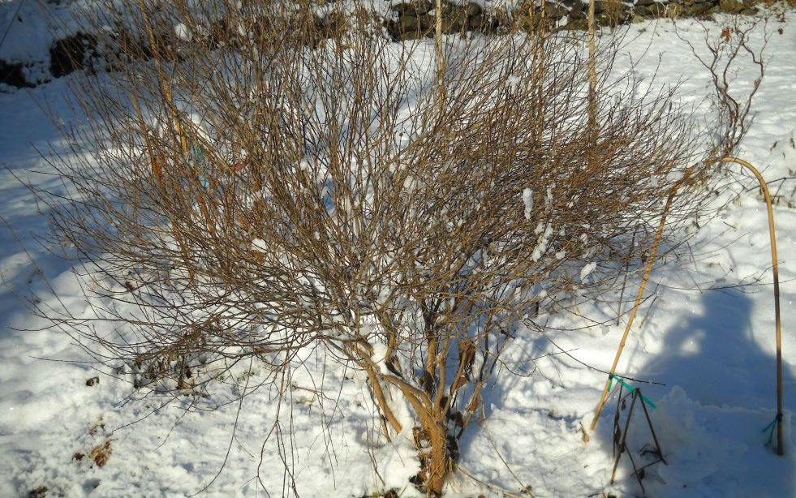

It was yesterday that I arrived here in Naryanmar from St. Petersburg. This
town, located on the banks of River Pechora, attracts many tourists like me.
The objective of the expedition team, including myself, is to understand the
characteristic features of the Tundra region on foot. The Tundra, covered by
snow throughout the year, reveals a world of wonders, especially for someone
from Kasai Province of Congo. For someone like me, living in the equatorial
region, which receives maximum insolation, it is beyond words to describe
the astonishment of reaching and viewing a region so close to the pole. The
diversity of flora and fauna, along with the stark contrast in human life
between these two regions, are experiences that must be encountered firsthand.
In the Tundra, the temperature during July, the hottest month, remains below
10 degrees Celsius, while in winter, it drops to as low as -50 degrees Celsius.
Then, I just thought of my home country, where high temperature prevails
throughout the year. After putting on thick woollen clothes and caps, we
got ready to explore the Tundra. Along with our breakfast, we had pelmeni,
an indigenous dish made with fish. In Congo, cassava is an integral part of
almost every dish. Kwanga, cooked cassava served in banana leaves; Fufu,
made from pounded cassava; and Sombe, made from cooked cassava leaves,
are the prominent cassava dishes. Curiosity stirred in my mind as I compared
the food habits of my home country with those of the Tundra…
The excerpt you have read is part of the description
of a Tundra expedition carried out by a traveller
from Kasai Province of the Republic of Congo,
located in the equatorial region.
You have understood from the previous chapter
that different climatic regions exist on Earth.
Haven’t you noticed that someone who has been
living in a place located in the equatorial climatic
region wrote in his travelogue that entirely
different conditions exist in Tundra, another
climatic region he visited?
Let’s explore the characteristic features of these
two regions.
With the help of an atlas, find the locations of
Congo and Naryanmar Town, and identify the
climatic regions they belong to.
You have identified that Congo belongs to the
Equatorial Climatic Region?
Now, Let's discuss the features of the same.
Visuals from the Equatorial
Rain Forest
The map given below (fig 3.3) illustrates places
that belong to the equatorial climatic region. With
the help of an atlas answer the questions based
on the map provided.
Fig 3.2
58
Part 1
Page 59
Figure fig_ch03_p059_01 (Page 59)
From The Rainy Forests to The Land of Permafrost
Equatorial Climatic Region
66½° N
North
America
Asia
Europe
23½° N
Africa
Central Africa
Amazon
Basin
South
America
South East
Asia
0°
23½° S
Australia
66½° S
Fig 3.3
Which
continents does the Equatorial climatic region
spread across?
Identify the places that belong to this climatic region.
To which heat zone does this climatic region belong?
Identify the countries that are included in the equatorial
climatic regions of continents like Asia, Africa, and South
America, and complete the table provided.
Mark the places that belong to the equatorial region on the outline
map of the world and include it in My Own Atlas.
Why is this climatic region called the equatorial climatic region?
You might have acquired a basic understanding of the
latitudinal extension of the equatorial region and the places
that belong to this region. Now, let’s examine the features of the
climate that prevail over this region. One of the salient features
of the equatorial climate is that the temperature remains more
or less the same throughout the year. In the equatorial region,
there is no significant variation in the annual and diurnal
ranges of temperature. The mean monthly temperature and
the mean annual temperature are both around 27 degrees
Celsius.
There is no winter in the equatorial climatic region. Do you
know why this peculiar type of climate is experienced here?
You have understood that the equatorial region receives
vertical solar rays throughout the year. The high rate of
insolation received here causes consistently high temperature.
Because of this, the region does not experience winter.
60
The mornings experience moderate temperature but as the
day progresses, it increases considerably. This significant rise
in temperature causes a high rate of evaporation, followed by
heavy downpours of convectional rain in the afternoons.
Haven’t you learned about the convectional rainfall in the
previous chapter?
How does convectional rainfall occur? What are the features of
convectional rainfall? Discuss in the classroom and prepare a note.
Does Kerala experience convectional rainfall, and in which months
does this rainfall occur in Kerala?
The equatorial climatic region is the region where the rainfall
is heavy and well-distributed throughout the year. The annual
rainfall in this region is between 175 cm and 250 cm. High
temperature and high rate of evaporation are the reasons for
the heavy rainfall. Along with convectional rainfall, orographic
rainfall is also received in certain places. It is the mountainous
areas of Indonesia and Africa where orographic rainfall is
experienced.
The atmospheric disturbances caused by the convergence of
air currents in the Doldrums occasionally lead to intermittent
rainfall of cyclonic origin.
Unlike in the monsoon climate or the savanna region, there is
no distinct dry season in the equatorial climatic region. This is
due to the abundant rainfall received in the equatorial region
throughout the year.
Doldrums
The equatorial region receives a high rate of insolation throughout the year. As a
result, a low-pressure region develops along the equator. Horizontal movement of
air is minimal in this region. This region is called the doldrums. It is also where the
trade winds from both hemispheres converge.
Standard X
61
Page 62
Figure fig_ch03_p062_01 (Page 62)
Social Science II
The following diagrams represent the distribution of annual
rainfall and temperature recorded in two different places of the
equatorial climatic region. Analyse the diagrams and answer
the questions that follow.
Month
Average
Precipitation
Temperature
(mm)
(°C)
Chart Title
മിി.മീീ
മിി.മീീ
35
350
30
January
209
25.1
February
174
25.7
March
268
26
April
300
26.1
250
May
246
26.3
200
June
174
26.2
150
July
183
26.1
100
August
219
26
September
243
25.8
50
October
305
25.7
300
0
25
20
15
10
5
Jan
Feb
Mar
Apr
373
25.2
November
284
25.1
December
Source: Certificate Physical and Human
Geography - Goh Chengleong
January
81
12.7
February
101
12.9
March
141
13
April
152
12.9
100
May
103
12.9
80
June
54
12.8
July
48
12.8
60
August
31
13.2
September
41
13.3
20
October
110
12.7
0
November
133
12.5
December
96
12.6
Source: Certificate Physical and Human
Geography - Goh Chengleong
Jun
Jul
Aug
Sep
Oct
Nov
Dec
0
Avg.
TempTemperature
Average
Kuala Lampur
Fig 3.4
Average
Temperature
(°C)
May
Precipitation
Precipitation
Precipitation
(mm)
Month
°C
400
Chart Title
മിി.മീീ
°C
160
20
140
120
15
10
40
5
Jan
Feb
Mar
Apr
May
Jun
Jul
Precipitation
Precipitation
Aug
Sep
Oct
Nov
Dec
0
Avg.
TempTemperature
Average
Bogota
Fig 3.5
Find the highest and the lowest mean monthly temperatures for
each place.
What is the annual range of temperature at each place?
Is there any month that does not receive rainfall?
Haven't you understood that the equatorial climatic region
generally receives high temperature and abundant rainfall
throughout the year?
62
In spite of being situated in the equatorial
climatic region, Kilimanjaro, the highest
mountain peak in Africa is snow-covered
throughout the year.
Why is Kilimanjaro snow-covered
throughout the year?
Excessive humidity, high rates of insolation
and intense heat make the days in the
equatorial climatic region quite oppressive.
However, the moderating effect of winds
blowing from the sea brings some relief along
the coastal areas. As a result, coastal regions
tend to be more populated.
Kilimanjaro
Fig 3.6
Do you know?
The local wind called
Harmattan blowing along
the Guinea coast during
the night reduces the
temperature of that region.
Conduct a classroom discussion to compare
the climatic conditions experienced in the
equatorial climatic region and Kerala. Have
you understood how the climate in the equatorial region
differs from the climate of Kerala? The significant features
of the equatorial climatic region include consistently high
temperature and heavy rainfall throughout the year.
The high temperature and abundant rainfall in this region
pave the way for luxuriant vegetation growth. Let's explore
the diverse natural vegetation found in the equatorial climatic
region, which plays a significant role in maintaining the global
ecological balance.
Natural Vegetation
Luxuriant forests, called tropical rainforests, are one of the
salient features of this climatic region. These forests spread
over the Amazon Basin in South America, West-Central
Africa, Indonesia, the Malay Peninsula, and New Guinea.
The rainforest found in the Amazon Basin
is called Selvas. In this climatic region,
there is no particular season for seeding,
flowering, fruiting, and shedding leaves.
As these processes occur year round in the
tropical rainforest, they remain evergreen
throughout the year. Hence, these rainforests
are also called equatorial evergreen forests.
Let’s explore the important features of the
equatorial evergreen forests.
Rainforest in Congo basin
Fig 3.7
A wide variety of evergreen trees, including
ebony, mahogany, cinchona, rosewood, and
others are seen abundantly in these forests.
Besides large trees, smaller palms, climbing
plants like lianas, epiphytes like orchids,
numerous parasitic plants, ferns, and grasses
like lalang grow luxuriantly here.
Another significant feature of these rainy
forests is that multiple species co-exist in a
particular area. It has been estimated that in
the Malaysian rainforests, as many as 200
species of plants may be found in an acre of
forest.
Rainforest in Amazon basin
Fig 3.8
64
Plants grow to varying heights depending
on the availability of sunlight. Trees form
canopies at different levels, according to
their heights. Observe the diagram (fig 3.9)
given below and identify the distinct canopy
layers formed by trees at different heights.
Part 1
Page 65
Figure fig_ch03_p065_01 (Page 65)
From The Rainy Forests to The Land of Permafrost
150 Feet
Upper Layer
60 Feet
Intermediate
Layer
30 Feet
Lower Layer
Graphical representation only for the purpose of conceptual clarity
The distinct canopy layers formed by plants at different heights
Fig 3.9
These evergreen rainforests absorb carbon dioxide and
produce oxygen at a massive rate. As a result, these forests are
often referred to as the 'Lungs of the World'.
In equatorial rainforests, the forest is cleared at certain places
for shifting cultivation. When these clearings are abandoned
after cultivation, less luxuriant secondary forests spring up.
Such secondary forests are called 'belukar' in Malaysia. In the
coastal areas and brackish swamps, mangrove forests thrive.
Haven't you identified the characteristic features of the flora
in the equatorial climatic region? Now, let's discuss the diversity
of fauna in this region.
The equatorial climatic region is rich in the diversity of wildlife.
Because of the climatic characteristics of this region, most of the
wildlife thrive in trees. The animals which spend most of their lives
in trees are called arboreal animals.
Since sufficient sunlight does not penetrate to the floor in these
dense forests, undergrowth is absent. As a result, herbivores that
feed on this undergrowth are not commonly seen. Consequently,
carnivores that prey on them are also negligible in number.
Orangutan
Howler Monkey
Emerald Tree Boa
Kinkajou
Arboreal animals
Fig 3.10
Lemurs
Wildlife in this region includes lemurs, chimpanzees, orangutans,
tree-dwelling reptiles, hippopotamuses, alligators, and many birds
such as parrots, toucan and hornbills.
Alligator
Hippopotamus
Anaconda
Fig 3.11
Macaw
With the help of information technology create a digital album
containing the pictures of fauna in the equatorial climatic region.
You have understood the physical features of the equatorial
climatic region. Now, let's discuss human life in this region.
The relationship between humans and their environment plays a
66
crucial role in shaping human life. Due to the physical conditions
prevalent in the equatorial climatic region, this area is sparsely
populated.
The Pygmies of Africa, the Indian tribes of the Amazon Basin, and
the Orang Asli of Malaysia are some of the important native
groups of this region.
The Indigenous people of Equatorial Rain forests
Fig 3.12
Pygmies
Pygmies are the indigenous people found
in different parts of Africa, especially in
the Congo Basin. They are comparatively
short-statured. Traditionally, they live by
hunting and heavily depend on the forest
for subsistence. They also gather fruits,
pulses, honey and other forest resources for
food. Their diet includes meat, fish, roots and fruits. They follow a nomadic
lifestyle and often live in small temporary huts made of leaves and branches.
Pygmies live in groups. Decisions are also made collectively. They follow
their traditional rituals strictly. Their rituals and beliefs are closely related
to the environment. Indigenous musical instruments, music and dance are
important parts of their culture.
The tribes living in these rainforests sustain
themselves by hunting animals, gathering nuts
and fruits, and fishing. The traditional method of
cultivation practiced here is shifting cultivation,
also known as slash-and-burn agriculture. Crops
are grown after clearing a forest area by cutting
and burning the trees. Cultivation continues until
the land loses its fertility. Once the soil becomes
infertile, the tribes move to another forest area,
leaving the previous clearings behind, and
Standard X
Burning forest for slash-and-burn
agriculture
Fig 3.13
repeat the same process. Crops such as
manioc (tapioca), yam, maize, bananas, and
groundnuts are primarily grown through
shifting cultivation.
Cocoa Plantation in West Africa
Fig 3.14
With the arrival of Europeans, plantation
agriculture was started extensively. The
prevailing climate in this region has proven
to be highly favourable for the cultivation
of certain crops that are highly significant
for industrial purposes. An important
crop among them is rubber. Malaysia and
Indonesia are the leading rubber-producing
countries in the world.
Another plantation crop widely cultivated
in the equatorial climatic region is cocoa.
Other major plantation crops extensively
grown here include oil palm, coconuts,
sugarcane, coffee, tea, bananas, and
pineapples.
Oil Palm Plantation in
Indonesia
Fig 3.15
With the help of information
technology, prepare a table
containing a list of major plantation
crops in the equatorial climatic
region and the corresponding areas
where they are grown.
Most of the natives in the equatorial climatic region are
nomads. Most houses are built with locally available resources.
Pictures of houses seen in different places of the equatorial
climatic region are given below; have a look at them.
We should never assume that most of the
people living in the equatorial climatic
region are either primitive tribes or nomads,
residing in houses built with wood and
stones. On the contrary, there are many
beautiful tourist destinations and modern
cities here. Cities like Equitas, Quito
Bogotá, Singapore, Jakarta, and Manaus
and Belem cities of Amazon basin are a
few examples. In Malaysia, Singapore, and
Eastern Brazil, significant development
has also been made through systematic
planning and hard work.
With the help of information
technology, find out the major
cities in the equatorial climatic
region. Locate them on an
outline map of the world and
include it in ‘My Own Atlas’.
Shelters in the Amazon
and Malaysian Equatorial
Region
In the Amazon Basin, people live
in a distinct type of house called
Maloca. Malocas have steep-sided
slanting roofs. Houses thatched
with coconut leaves are also seen
here. Villages in the equatorial
regions of Malaysia are called
Kampongs. Houses are mainly
made of wood here. As the houses
are constructed with wood,
bamboo, and leaves, extreme heat
is not felt inside these houses.
Sleeping sickness is a type of
disease found in equatorial
rainforests. It is spread
through Tse Tse flies. Another
fatal disease in the equatorial
rainforests is yellow fever,
caused by mosquitoes.
Though the equatorial climatic region is
blessed with rich forests, numerous rivers,
abundant water, and scenic beauty, it
encounters many challenges. Let’s glance at
them.
We know that the hot and wet equatorial
climate is highly supportive of plant
growth. At the same time, it also encourages
the spread of insects and pests. As germs
and bacteria are more easily transmitted
through moist air, this leads to a widespread
occurrence of diseases in the region. The
spread of insects and pests is also harmful
to crops.
Unlike in modern cities, most of the
equatorial climatic region is devoid of basic
amenities. The thick, luxuriant forest hinders the development
of this region. It is too difficult and expensive to construct and
maintain roads and railway lines through these dense forests
and over swamps. Lalang (tall grasses) and thick undergrowth
spring up as soon as the trees are cut. It often adversely affects
the cultivation of crops too. Wild animals, disease-spreading
insects, and poisonous creatures pose a threat to the lives of
those engaged in construction work in these forest areas. Many
remote parts of the Amazon Basin, the Congo, and Borneo lack
modern communication systems even today. The rivers form
the only natural highways.
Lalang
Fig 3.21
70
Although equatorial climatic regions are blessed with thick
forests, commercial extraction remains challenging. The
density of forest and the difficulty of transporting logs hinder
commercial lumbering. Additionally, the hardwoods are too
heavy to be floated down the streams.
Livestock rearing is not a primary subsistence
activity in most parts of this climatic region
due to the absence of grazing land as well as
insect attacks on the animals.
The equatorial rainforests play a crucial role
in making the world’s climate sustainable.
About one-third of the world's total forests
are located in three regions: the Amazon
Basin, the Congo Basin, and Southeast Asia.
These forests, which play a significant role in
influencing the world’s climate, face numerous
threats of deforestation in many ways.
Haven’t you heard of forest fires in the
Amazon forests?
Forest fire in Brazilian Rainforests
Fig 3.22
By utilizing the possibilities of information technology, collect news
on forest fires in the Amazon forests from the media and prepare a
note on it. Present the same in your classroom.
Another issue encountered by this region is human-induced
forest deterioration. Human activities such as agriculture,
construction, urbanization, and mining are alarmingly
destroying these forests.
Use information technology to gather details on the challenges
faced by equatorial rainforests. Lead a discussion on the topic.
So far, we have discussed the characteristic features of the
climate, the diversity of flora and fauna, and human life in the
equatorial climatic region. Now, let's explore the geographic
features of another climatic region, which has entirely different
conditions from those of the equatorial climatic region.
My intense longing for many years to see the
northernmost town in the world has finally
brought me to Longyearbyen, a town in the
Svalbard Islands located north of Norway in
the Arctic Sea. The Svalbard Islands, covered
by snow throughout the year, are part of
Norway. This mining town, inhabited by
more than a thousand people, is considered
the northernmost settlement in the world.
The conditions in this region and the
way people live here will generate both
astonishment and curiosity in anyone. Is
it necessary to specify how amazing the
experiences in this part of the world are for
someone like me, especially coming from the
equatorial region? The day I arrived, there
was heavy snowfall. Every year, from midNovember to January, this town experiences
seemingly everlasting nights. Those living
here must adjust their lives during this
period, known as the polar night. When
they go out for work during the day, they
must wear reflective clothing over their
usual woollen clothes to be recognized in
the darkness. One of nature's wonders that
can be witnessed here is the Northern Lights.
As I gazed at the multi-coloured sky and
the snow-covered mountains reflecting the
same sky, I stood still, forgetting everything
around me.
The extract you have read is a travel memoir
by a traveller with an Arctic expedition, who visited the
northernmost human settlement of Longyearbyen.
72
Part 1
Page 73

Figure fig_ch03_p073_01 (Page 73)
From The Rainy Forests to The Land of Permafrost
What features have you noticed here that are different from
those in the equatorial region?
Snow fall
By using an atlas, find the location of the town of Longyearbyen
and identify the climatic region to which this town belongs.
Examine the map given below and write down the regions
marked on the map.
Have you identified the location of the Tundra region? Now, find
the continents over which the Tundra region spreads. Complete the
table given below.
Places
Siberia
Greenland
Iceland
North Scandinavia
North Canada
Alaska
Continents
The Tundra region is located to the north of the Taiga region. It
spreads along the Arctic coasts of North America and Eurasia,
and that of Greenland.
The Tundra region can be categorized into Arctic Tundra and
Alpine Tundra. Identify from the table below the regions to
which each type of Tundra belongs.
Arctic Tundra
In parts located to the north of Taiga
in Alaska, Northern Canada, Siberia,
Greenland, Iceland, Scandinavia
With the help of an atlas, identify the location of the Tundra region
and mark it on the outline map of the world. Include the map in My
Own Atlas.
The Tundra climatic region is also called the Arctic or Polar
Climate. The polar climate is characterized by short summers
and long winters. Let's explore the features of the climate
prevailing here.
The climate of the Tundra is characterized by a very low mean
annual temperature. In mid-winter, temperature falls between
-25 and -35 degrees Celsius and the temperature in the interior
parts of the Tundra falls still lower. Summers are short here
during which, a few weeks have the temperature rising above
0 degrees Celsius. The sun never sets for weeks in the area
between the Arctic Circle and the Pole. Likewise, the sun never
rises for weeks in this area either. Don’t you remember the
polar night mentioned in the travelogue by the traveller who
visited Longyearbyen, which lies beyond the Arctic Circle?
Haven’t you learned in your lower classes why long nights
and days occur in the area that lies north of the Arctic Circle?
One of the features of this region is that during the period when
the sun's apparent position is in the Northern Hemisphere, the
North Pole experiences day for around six months. In contrast,
during the period when the sun's apparent position is in the
Southern Hemisphere, the North Pole experiences night for
around six months.
In which months is the apparent position of the sun in the Northern
Hemisphere?
In which months is the apparent position of the sun in the Southern
Hemisphere?
How long are the nights and days during these periods at the Poles?
During winter the precipitation is in the
form of snow. The coastal areas where
cyclones are strong have much heavier
rainfall. The strong snowstorms that blow
over this region are called blizzards. They
often cause heavier snowfall.
Snowfall in the Tundra Region
Fig 3.28
The following diagram represents the average annual temperature
and rainfall recorded at a place in the Tundra region. Analyze the
diagram using the indicators given below.
Month
Average
Precipitation
Temperature
(mm)
(°C)
20
-20.2
February
13
-23.4
March
17
-21.3
April
24
-13.7
May
27
-4.3
June
29
2.6
July
38
6.4
August
55
6
September
41
1.2
October
54
-5.7
January
42
-10.8
November
30
-14.6
December
Source: Certificate Physical and Human
Geography - Goh Chengleong
Indicators
Chart Title
മിി.മീീ
°C
60
10
50
5
0
40
-5
30
-10
20
-15
10
0
-20
Jan
Feb
Mar
Apr
May
Jun
Precipitation
Precipitation
Jul
Aug
Sep
Oct
Nov
Dec
-25
Avg.
Temp
Average
Temperature
Upernavik in Greenland
Fig 3.29
Month that receives the maximum rainfall
Month that receives the minimum rainfall
Month in which the maximum average temperature is
recorded
Month in which the minimum average temperature is
recorded
76
Part 1
Page 77

Figure fig_ch03_p077_01 (Page 77)

Figure fig_ch03_p077_02 (Page 77)

Figure fig_ch03_p077_03 (Page 77)

Figure fig_ch03_p077_04 (Page 77)
From The Rainy Forests to The Land of Permafrost
The maximum average temperature and the minimum
average temperature
The Annual range of temperature
Haven’t you explored the characteristic features of the climate
experienced in the Tundra region? We know that the diversity
of flora and fauna in any region depends on the climatic
features of that region. The natural vegetation
is scanty in this region due to insufficient in
sunlight and long winters. The diversity of
fauna is also scanty here.
Let’s take a look at the significant features
of the natural vegetation and wildlife of this
region.
Trees are normally absent in the Tundra
region due to the challenges posed by the
climate. Mosses, lichens, sedges, and bushes
are commonly found here. Dwarf willows and
stunted birches withstand the harsh climatic
conditions and survive in certain places.
Lichens
Fig 3.30
Some hardy grasses grow in the coastal lowlands where
favourable conditions prevail. Herbivores like reindeer make
survival possible here only by depending on these pastures.
Hardy Grasses
Fig 3.31
Bushes
Fig 3.32
Dwarf willows
Fig 3.33
Even though summer is very short in the Tundra, which is
covered by snow throughout the year, this region becomes
active with the onset of summer. In brief summer, as the
snow melts, bushes start bearing berries and flowers begin to
bloom. Birds migrate to the Tundra during this period from
the south to prey on insects that come out at this time. Arctic
foxes, wolves, polar bears, musk-oxen, and arctic hares are the
other animals found here.
Polar Bears
Fig 3.34
Arctic Fox
Fig 3.35
Arctic Hare
Fig 3.36
Musk-Ox
Fig 3.37
With the help of information technology, create a digital picture
album of animals found in the Tundra region.
Human life in the Tundra
Normally, the Tundra is a sparsely populated region. Human
life in this region is largely confined to the coast.
Plateaus and mountains are permanently snow-covered,
making them uninhabitable. The Tundra is mainly inhabited
by some nomadic tribes.
Examine the table given below. Identify the different tribes in
the tundra and the regions they belong to.
Greenland, North Canada, Alaska
With the help of an atlas, identify the regions where each tribal
group lives in Tundra and mark these regions on an outline map of
the world. Write the name of each tribal group appropriately on the
map. Include this map in My Own Atlas.
Hunting and fishing are the major activities for
subsistence by the people of the Tundra. Whales,
seals, caribou, various kinds of fish, birds, and furbearing animals provide them with everything
they need for food and clothing. Their bones and
other parts are used as weapons, tools, and even
utensils. The Polar Eskimos of Greenland still lead
a primitive lifestyle, not very much different from
their forefathers. During winter, they live in houses
called igloos and in summer, they migrate to other
places for hunting and fishing. During the summer
season, they live by the side of streams in portable
tents made of animal skin. There are Eskimos who
hunt and feed on even polar bears.
Alaskan Eskimo
Fig 3.38
Koryaks of North- Eastern Asia
Fig 3.39
Samoyeds of Siberia
Fig 3.40
In the last sixty years, the way of life of the Eskimos has
undergone tremendous changes through their contact
with Europeans. In coastal villages, Eskimos live in
houses with modern amenities. They now use speedboats
for fishing instead of small rowing boats called kayaks.
Fur-bearing animals are being reared on
a commercial scale. In some areas of the
Tundra in Canada and Alaska, schools have
been established for Eskimo children to
enable them to live a modern life.
Reindeer Farm in Siberia
Fig 3.41
In the Eurasian Tundra, most of the tribal
groups lead a nomadic life, wandering with
their herds of reindeer in search of pastures.
In the Siberian Tundra, large farms have
been established for rearing fur-bearing
animals, including reindeer, on a commercial
scale.
Mining in the Tundra region results in
the development of new settlements. In
certain areas of the Southern Tundra where
favourable conditions exist, cereals with
short growing season are also cultivated.
Modern Agriculture in the
Tundra Region
Fig 3.42
Igloo
The dome-shaped, temporary shelters made out of
blocks of snow by Eskimos in the Tundra region.
Sledges
In some areas of the Tundra, a distinct type of vehicle
called sledge, which slides over snow, is used for
transportation. Dogs are usually used to pull these
vehicles.
The Tundra and the Climate Change
You have learned from the previous chapter that
climate change occurs globally. The Tundra is one of
the places that is adversely affected by climate change.
80
Part 1
Page 81
Figure fig_ch03_p081_01 (Page 81)
From The Rainy Forests to The Land of Permafrost
Due to global warming, the permafrost in the Tundra melts
considerably. This adversely affects the ecosystem and
environmental equilibrium of the region.
With the help of information technology, prepare a note on the topic
‘The Challenges Posed by Climate Change in the Tundra Region’.
Present it in the classroom.
We have, so far, discussed the geographical features of two
regions with distinctly different climatic conditions. Haven't
you read the imaginary travel memoirs included in the
chapter? Imagine that you are the expeditioner travelling from
the Equatorial region to the Tundra.
Prepare a travelogue comparing these two regions based on
the indicators given below. Make it attractive by including
appropriate pictures.
Climate
Flora and Fauna
Human Life
Challenges faced by each region
We have gone through the characteristics of two regions:
the Equatorial climatic region which experiences high
temperatures throughout the year and the Tundra climatic
region which experiences extreme cold year-round. The
place we live in is entirely different from these two regions,
isn't it? How diverse our Earth is! We have seen how some
people, flora, and fauna make life possible by adapting to the
unique conditions of their respective regions. Our duty is to
live in harmony with the environment by internalizing and
respecting all these diversities.
Standard X
81
Page 82
Figure fig_ch03_p082_01 (Page 82)
Social Science II
Extended Activities
1. Conduct a seminar in your class on the topic "Human Life in the Equatorial
Climatic Region and the Tundra Region."
2. With the help of information technology, create a digital album containing
pictures that illustrate the lifestyles of tribes in the Equatorial Climatic
Region and the Tundra Region. Make a comparative study of their
lifestyles.
3. Prepare a note comparing the climate of both the Equatorial Climatic
Region and the Tundra Region.
4. Prepare a pictorial description of the Northern Lights after collecting more
information about it. Present it in the classroom.
5. Conduct a debate on the topic 'The Challenges faced by the Equatorial
Rainforests'.